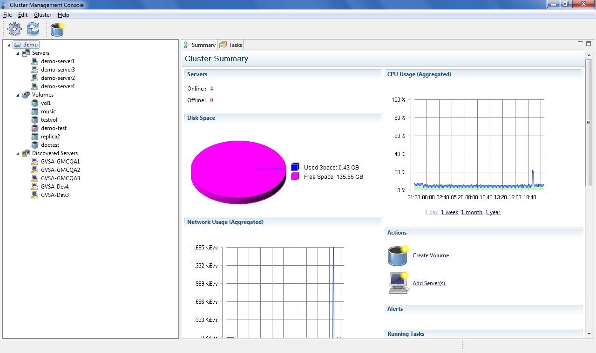

Exploring Gluster Management Console
This section describes the main sections of the user interface and
explains the type of functions you can perform using each section.
Note: You can use Gluster Management Console to set up different cloud environments; but can only manage one cloud in one login session.
The Gluster Management Console window is divided into two panes: a navigation tree in the left and a tabbed information pane in the right.

- Left Pane: The Left pane displays the cloud, it's
servers, and it's volumes.
- Right Pane: At any point of time, the Right pane shows tabs with information that are applicable to the resource selected in the left pane such as Server, Volumes, Bricks, and Discovered Server.
- File Menu: Helps you to exit the application.
- Edit Menu: Helps you to import keys, export keys,
change password, change settings and refresh the application.
- Gluster Menu: Helps you to manage your cluster,
servers, and volumes.
For example, if you have selected volumes, the Gluster menu displays all volume related options.